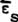
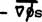
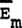
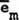
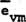
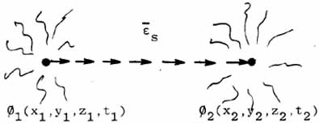

|
-- THE SHADOW VECTOR -- Note that this spatial vector  represents , that is,
but
cannot be a force (mass system) vector. It can only exist as an
ordered pattern in the virtual flux between two separated points of the
vacuum; that is, as an ordered pattern in the virtual state.
Literally,
exists only as a tiny bit of order existing in great disorder.
in vacuum in the absence of an observable spinning charged particle, since
The actual existence of may be visualized in terms of successive differentials of  , broken into differentials so small that, observably, each little differential's mass component m has become virtual, so that
where subscript m stands for mass, subscript v for virtual, and observably
but, in the absence of a spinning charged particle,
since the  components remain individually separated. That is, in macro-time a SHADOW force vector exists, made of microscopically ordered BUT UNJOINED (unintegrated) "virtual state" vector differentials of what would be an observable mass system force vector if integrated.Thus, the "  Figure 12. A "shadow vector" We
say that such a previous mass system vector, broken into ordered but
unjoined virtual vectors by the absenting of all mass, is a SHADOW
VECTOR, and we label it with a subscript vm, to represent "virtual
mass" system. To the macro observer, this is the kind of
"vector" that exists in vacuuo.
What I am saying is that ANY observable spatial vector is actually a spatiotemporal vector, and the MAGNITUDE of any vector is related to TIME (to the existence of that vector in time) at the most fundamental level. Suffice it to say that, if the fundamental quantum level (Δt) aspect of a vector is interfered with, then the MAGNITUDE of the vector is interfered with.24 That is, if we can make a time wave, we can change or affect ANY vector's magnitude, including the magnitude of mass system vectors and charged mass system vectors. Such a "time wave" can be made easily, and it has been. |